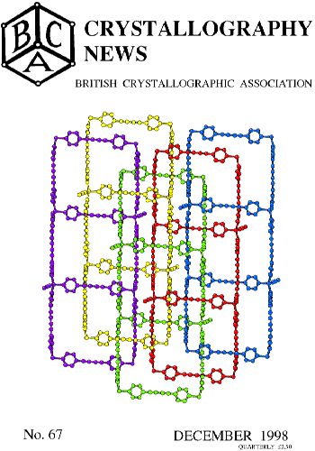

Contents Crystallography News Dec 98

cover story
FROM THE PRESIDENT
remarks p 2
The BCA, the IUCr and the Royal Society
FROM THE SECRETARY
-
Council Members 1998-1999 p 4 - 5
-
Current Chairmen of Groups p 2
FROM THE TREASURER
BCA Bursaries for IUCr99 p7
FROM THE ADMINISTRATIVE SECRETARY
- BCA membership Forms for 1999 and instructions p60
BCA Bursaries in 1999 p6
change of email address to
harris@ccdc.cam.ac.uk
p57
FROM THE BCA GROUPS
BSG report from Galashiels
workshop, September p 32
CCG Logo Competition p 10
IG reports and
coming meeting p41-45
forthcoming meetings p 42
Nominations sought for PCG Philips
Award for 1999 p31
NEWS and VIEWS
Book Review 2 Dorothy Hodgkin:
a life
Book Review 3 The Mathematics of Structures p50
CLRC News p 33 -41
Cover Story - .NOT. Christmas Decorations p11
UK Crystallographic Tourist- Alan Mackay's
Fiscal Chemistry p51
European Crystallographic Association p20
Letter to the Editor, on making academic software
more readily available 25 -26
Residual Stress Section 39 - 43
Software - Crystals32 27
EDUCATION and AWARDS
Beevers-Lipson strip mechanism 14 - 15
CCG X-Ray course April 1999 p13
Book Review 1 - Crystal Structure
Determination 12
Fankuchen Memorial Award
for Eleanor Dodson 32
Lens crystallin - Christine Slingsby 18 - 19
MEETING REPORTS
Asian Crystallographic Association, Malaysia 22
Bursary reports
21,
22,
23
Denver X-ray Conference
48 - 49
European Crystallography Meeting, Prague
21 - 22
International Conference on Crystal Growth,
Jerusalem 23
XTOP 98 Durham 29 - 31
FORTHCOMING MEETINGS
IG meetings 1999 p 45 - 47
IUCr99 Glasgow p8,
deadlines reminder 56
Summary List p 52 - 55
EDITORIALS
Advertising Rates
and Publication Dates for 1999 58 -59
December Competition Rocky questions for Set99? p63
Editor's Archive
needs pictures and chemists; information wanted 24
Special Issue on software, March 1999 24
Contributors to this issue
Frank Allen p20
Sandy Blake p10
Lachlan Cranswick p22, 25
Kate Crennell p16, 24, 39, 50
Fokke Dijksma p21
Chris Gilmour,
Susan E. Girdwood p36
Mike Glazer,
Bob Gould,
Stephanie Harris,
Derrick Hart p43
Alison Hennessy p23
Judith Howard,
Andrew Leslie p32
Alan Mackay p51
Steve Maginn,
Lorraine McBride p22
Pierre Rizkallah p35
Kenneth Shankland p21, 22
Christine Slingsby p18
Brian Tanner p29
Dave Taylor p48
Elinor Vinecombe p32
David Watkin p12, 27,
Chick Wilson p38
Mark R. Daymond p39
Page last updated 7 Mar 1999
BCA Home page WebMaster
BCA@ISISE.RL.AC.UK
 Click here to return to BCA homepage
Click here to return to BCA homepage